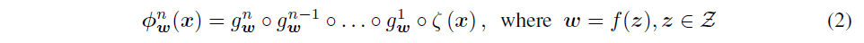
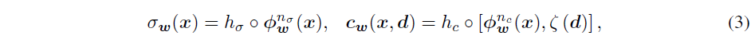

STYLENERF: A STYLE-BASED 3D-AWARE GENERATOR FOR HIGH-RESOLUTION IMAGE SYNTHESIS Paper | Code
Overview
StyleNeRF: 3D-aware generative model，能在无结构2D图像上训练，合成多视角一致的高分辨率图像。
目前的方法存在问题：
- 无法合成高分辨率图像，3D不一致
- 缺少对style attributes和camera pose的控制
key idea:
- 结合NeRF和style-based generator
- 体渲染产生低分辨率feature map，逐渐上采样得到高分辨率图像 - 新的upsampler和惩罚项
下游任务：zoom-in and-out, style mixing, inversion, semantic editing
Style-based Generative Neural Radiance Field
用style vectors作为NeRF的条件输入：

类似于StyleGAN2，$f$是一个mapping network，把spherical Gaussian space 中的 noise vectors 映射到 style space。$g_\omega^i(\dot)$是第$i$层MLP，它的权重矩阵由输入的style vector $\omega$来调节。
用提取出的特征预测密度和颜色：

其中$h_\sigma$和$h_c$可以是线性投影或两层的MLP。和原来的NeRF不同的是，这里假设$n_\sigma>n_c$，因为外观比几何存储的信息更多。前$\min(n_\sigma,n_c)$层是共享的。
高分辨率图像生成的近似算法
- 每个像素都对应一个feature vector；
- 只需要经过一次对网络的query，而NeRF需要对一根光线上的所有采样点在网络中进行查询。